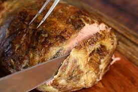
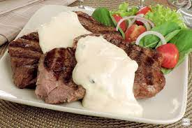
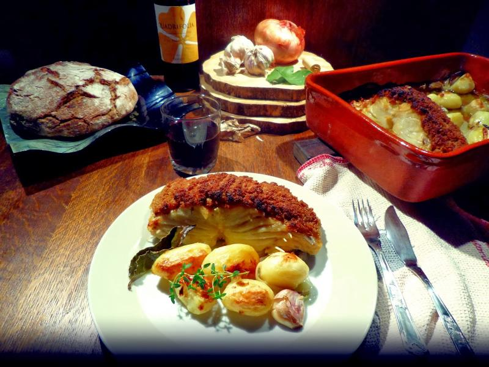
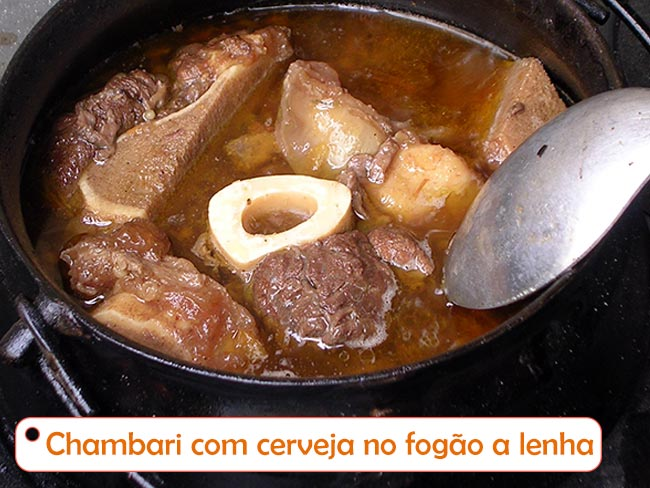

☰
X
Inicio
Micro-Ondas
fogao a Lenha
Assados
Sobremesas
Fritos
Comidas feitas em
Forno a Lenha
Cupim em fogão de lenha

Uma Perfeita receita de Cupim no Forno a Lenha
Ir para Pagina
Frango Caipira no fogão à lenha
Uma Perfeita receita de Cupim no Forno a Lenha
Ir para Pagina
Alcatra 3 Queijos
________________

Uma Perfeita receita de Cupim no Forno a Lenha
Ir para Pagina
Pizza no forno a lenha
Uma Perfeita receita de Cupim no Forno a Lenha
Ir para Pagina
Bacalhau com Broa

Uma Perfeita receita de Cupim no Forno a Lenha
Ir para Pagina
Chambari com Cerveja

Uma Perfeita receita de Cupim no Forno a Lenha
Ir para Pagina